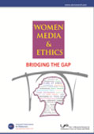

December, 2016
Every year we at Uks, celebrate the achievement of Pakistani women by launching the Annual Uks Diary.
What started out initially as a diary covering women’s achievement in general, evolved into a thematic collection, each diary picturing the stories and experiences of women who have excelled and contributed in that arena.
The Uks diary is a one- of-its kind yearly publication, which contains a compilation of the meticulous research of the Uks team: working our way through media monitored - mostly print and recently electronic - spanning decades’ long data beginning from 1947 to date. A striking collector's item; a new theme every year essentially related to women’s development, represented through press clippings, opinions, poetry, illustrations and a detailed chronology of related events. Since our first diary was launched in 1998, we have covered numerous themes such as gender-based violence, entrepreneurship, arts and literature, politics, education, health, law and human rights to name a few.
It is through these memoirs, we hope each year, to not only pay tribute to Pakistani women over the course of time, but also provide a useful and handy document for anyone who is seeking a thematically and chronologically organised collection of this information.
Uks diaries are widely disseminated through our workshops and advocacy campaigns and are also available for purchase from our office. A copy of each of the past years diaries can be obtained by sending us an email. The current year’s diary is available on payment by sending us a request at this email.